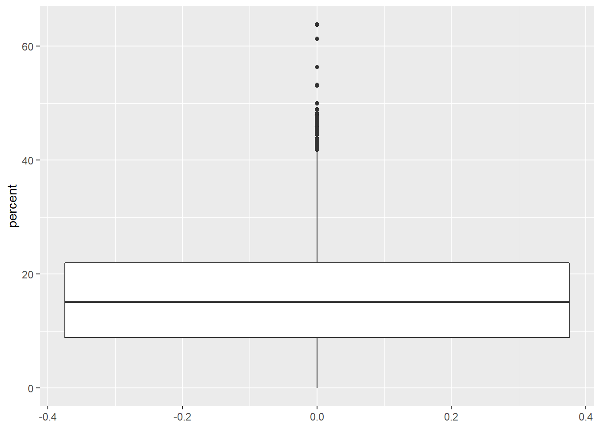

World Bank Data
library(janitor)
library(tidyverse)
library(outliers)MVP
women <- read_csv("data/women_in_gov.csv", skip = 4)women <- rename(
women,
"country_name" = "Country Name",
"country_code" = "Country Code",
"indicator_name" = "Indicator Name",
"indicator_code" = "Indicator Code"
)unique(women$indicator_name)## [1] "Proportion of seats held by women in national parliaments (%)"unique(women$indicator_code)## [1] "SG.GEN.PARL.ZS"unique(women$X64)## [1] NAwomen <- select(
women,
-indicator_name,
-indicator_code,
-X64
)women <- pivot_longer(
women,
cols = "1960":"2018",
names_to = "year",
values_to = "percent"
)women_na <- women %>%
filter(
is.na(percent)
)unique(women_na$percent)## [1] NAsum(
is.na(women_na$percent)
)## [1] 10466women <- women %>%
filter(
!is.na(percent)
)women## # A tibble: 5,110 x 4
## country_name country_code year percent
## <chr> <chr> <chr> <dbl>
## 1 Afghanistan AFG 1990 3.7
## 2 Afghanistan AFG 2005 27.3
## 3 Afghanistan AFG 2006 27.3
## 4 Afghanistan AFG 2007 27.7
## 5 Afghanistan AFG 2008 27.7
## 6 Afghanistan AFG 2009 27.3
## 7 Afghanistan AFG 2010 27.7
## 8 Afghanistan AFG 2011 27.7
## 9 Afghanistan AFG 2012 27.7
## 10 Afghanistan AFG 2013 27.7
## # ... with 5,100 more rowsggplot(women) +
aes(y = percent) +
geom_boxplot()
women <- women %>%
mutate(
zscore = scores(percent),
is_outlier = zscore < -3 | zscore > 3,
zscore = round(zscore, 2)
)filter(
women,
is_outlier
)## # A tibble: 35 x 6
## country_name country_code year percent zscore is_outlier
## <chr> <chr> <chr> <dbl> <dbl> <lgl>
## 1 Andorra AND 2011 50 3.27 TRUE
## 2 Andorra AND 2012 50 3.27 TRUE
## 3 Andorra AND 2013 50 3.27 TRUE
## 4 Andorra AND 2014 50 3.27 TRUE
## 5 Bolivia BOL 2014 53.1 3.57 TRUE
## 6 Bolivia BOL 2015 53.1 3.57 TRUE
## 7 Bolivia BOL 2016 53.1 3.57 TRUE
## 8 Bolivia BOL 2017 53.1 3.57 TRUE
## 9 Bolivia BOL 2018 53.1 3.57 TRUE
## 10 Cuba CUB 2013 48.9 3.16 TRUE
## # ... with 25 more rowsRwanda and Bolivia are famous for having lower houses of parliament where more than 50 per cent of the chamber are female deputies. These outliers are valid data, but they make visual analysis of the rest of the world more difficult. It is, arguably, worth removing Rwanda and Bolivia from the data set to focus on the rest of the world.
women_row <- women %>%
filter(
!(country_code %in% c("BOL", "RWA"))
)women_row_mean <- women_row %>%
group_by(country_name) %>%
summarise(
mean_percent = mean(percent)
) %>%
arrange(
desc(mean_percent)
)head(women_row_mean, 10)## # A tibble: 10 x 2
## country_name mean_percent
## <chr> <dbl>
## 1 Sweden 44.2
## 2 Finland 38.9
## 3 Cuba 38.8
## 4 Norway 38
## 5 Denmark 37.4
## 6 Netherlands 36.7
## 7 Iceland 35.8
## 8 South Africa 34.6
## 9 Mozambique 34.0
## 10 Argentina 33.5tail(women_row_mean, 10)## # A tibble: 10 x 2
## country_name mean_percent
## <chr> <dbl>
## 1 Nauru 2.39
## 2 Tonga 1.82
## 3 Vanuatu 1.74
## 4 Papua New Guinea 1.39
## 5 Palau 1.14
## 6 Oman 1.12
## 7 Solomon Islands 1.05
## 8 Qatar 0.754
## 9 Yemen, Rep. 0.509
## 10 Micronesia, Fed. Sts. 0Which countries have had the greatest change in proportion of women deputies for between their earliest and latest recorded dates?
women_row_change <- women_row %>%
arrange(
country_name,
year
) %>%
group_by(country_name) %>%
mutate(
diff = percent - lag(percent)
) %>%
summarise(
cum_diff = sum(diff, na.rm = TRUE)
) %>%
mutate(
cum_diff = round(cum_diff, 2)
) %>%
arrange(
desc(cum_diff)
)head(women_row_change, 10)## # A tibble: 10 x 2
## country_name cum_diff
## <chr> <dbl>
## 1 South Africa 39.5
## 2 Namibia 39.3
## 3 Ethiopia 36.8
## 4 Mexico 36.2
## 5 Costa Rica 35.1
## 6 Macedonia, FYR 35
## 7 Ecuador 33.5
## 8 France 32.7
## 9 Argentina 32.6
## 10 Nicaragua 30.9tail(women_row_change, 10)## # A tibble: 10 x 2
## country_name cum_diff
## <chr> <dbl>
## 1 Mali -3.4
## 2 Yemen, Rep. -4.1
## 3 Vanuatu -4.3
## 4 Korea, Dem. People’s Rep. -4.8
## 5 Guyana -5
## 6 Guinea-Bissau -6.3
## 7 Mongolia -7.8
## 8 Hungary -8.1
## 9 Romania -13.7
## 10 Armenia -17.5